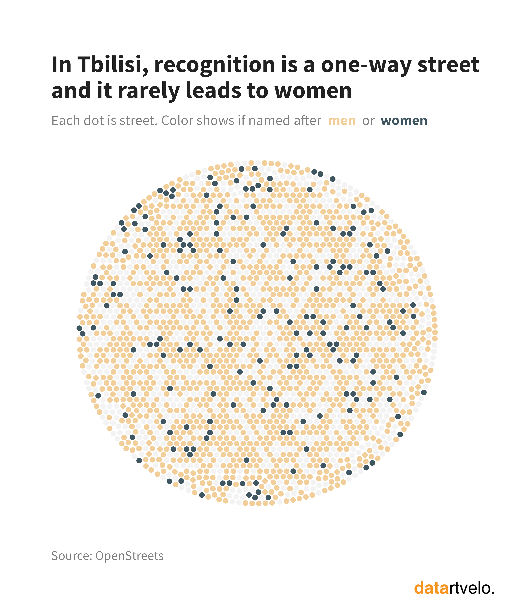
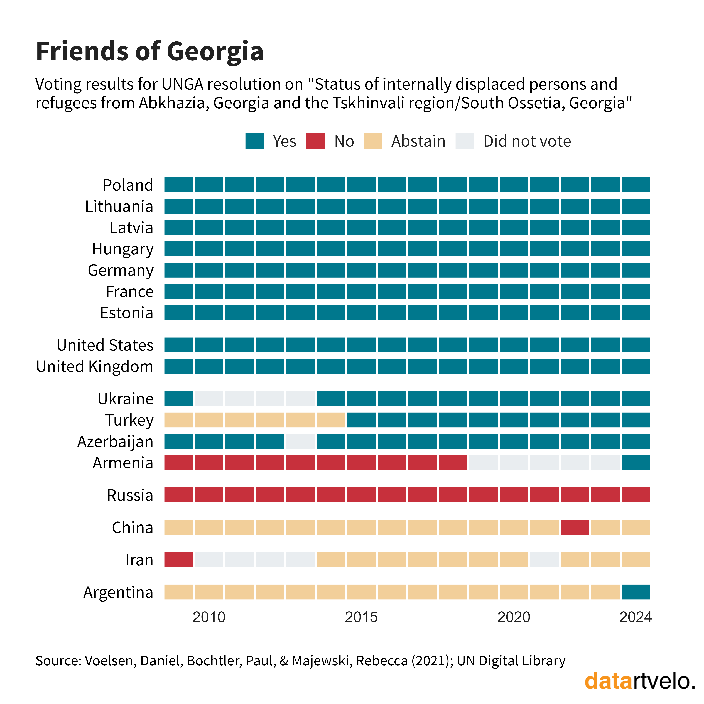

This is my personal portfolio where you can learn more about me and my work.
I’m a passionate data analyst with a knack for transforming complex social data into compelling, human-centered stories. My journey began in public opinion research, driven by a curiosity to understand the 'why' behind the trends shaping our world. For over nine years, this has evolved into a career dedicated to uncovering actionable insights that guide policy and public understanding.
My approach is rooted in the principles of rigorous social research and a commitment to statistical integrity. I believe the most powerful insights come from not only analyzing what the data says, but understanding the human context in which it exists. This philosophy is the driving force behind my data storytelling platform, Datartvelo, where I make public data on political and social issues accessible to all.
Beyond the technical skills (R, Python, SQL, Power BI), I am dedicated to clear communication. Whether designing a questionnaire or presenting findings to stakeholders, my goal is always to make data accessible, understandable, and impactful for any audience.
Datartvelo is my data storytelling platform where I transform complex social data into engaging, human-centered narratives.
Through interactive visualizations and clear explanations, I make public data on political and social issues accessible to everyone.
My goal is to foster evidence-based discussions and empower individuals to understand the data.


If you’d like to collaborate, have questions, or just want to say hi — feel free to drop me a message. I’ll get back to you as soon as I can!